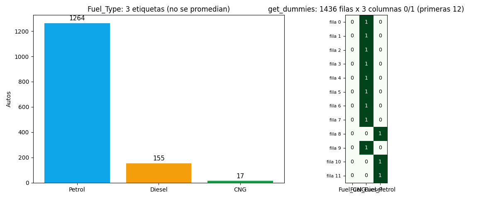

Bloque C · Limpieza de Datos · Lección 0055 · mar 1 sep
One-hot: etiquetas a columnas 0/1
Win de hoy: convertir Fuel_Type (Petrol 1264 / Diesel 155 / CNG 17)
en columnas 0/1 con get_dummies, correr un OLS con base Petrol
(Diesel +615 €, p = 0,046; CNG −1.258 €, p = 0,155) y esquivar la trampa dummy.
1 · El problema: OLS no lee texto
La regresión múltiple
de la lección 0024 filtró «solo numéricas»:
Fuel_Type quedó afuera porque OLS suma y multiplica, y «Petrol» no se puede multiplicar.
La tarea de clase lo pedía explícito: aplicar one-hot encoding, y el apunte lo resume en una línea:
los categóricos se transforman «agregando columnas con 0 y 1».
La idea ingenua falla: Petrol = 1, Diesel = 2, CNG = 3 inventa un orden que no existe. ¿Diesel vale el doble que Petrol? ¿La distancia CNG–Diesel es igual a Diesel–Petrol? No: son etiquetas nominales, y codificarlas con 1/2/3 le miente al modelo con aritmética fantasma.
2 · La solución: una columna sí/no por etiqueta
One-hot encoding
(o dummies)
crea una columna por etiqueta: Fuel_Petrol, Fuel_Diesel, Fuel_CNG.
Cada auto tiene un 1 en su columna y 0 en las demás —«one hot», uno prendido:

import pandas as pd
df = pd.read_csv("../ToyotaCorolla.csv")
dum = pd.get_dummies(df["Fuel_Type"], prefix="Fuel", dtype=int)
print(dum.shape) # (1436, 3)
print(dum.sum(axis=1).unique()) # [1] → cada fila, un solo 1
print(dum.head(3).to_string()) # las 3 primeras filas son DieselRegenerar la figura (mismo resultado versionado en assets/img/toyota/):
python scripts/make_figures.py --only one-hot-encoding3 · La trampa dummy y la base Petrol
Con las 3 dummies más la constante, una columna sobra: si sabés Diesel y CNG, Petrol sale gratis (Petrol = 1 − Diesel − CNG). Es redundancia perfecta: la matriz queda con rango 3 teniendo 4 columnas, es decir singular y OLS no encuentra coeficientes únicos (el extremo de la 0019). La salida: usar k−1 dummies y dejar una etiqueta como base. Acá la base natural es Petrol (1264 autos, la mayoría):
import statsmodels.api as sm
d = dum[["Fuel_Diesel", "Fuel_CNG"]] # base: Petrol
m = sm.OLS(df["Price"], sm.add_constant(d)).fit()
print(m.params.round(2).to_string())
# const 10679.31 (= media de Petrol, la base)
# Fuel_Diesel 615.24 (p = 0,046: justo significativo)
# Fuel_CNG -1258.13 (p = 0,155: dudoso, solo 17 autos)4 · Quiz (auto-chequeo inmediato)
5 · Fuente primaria y cierre
Para profundizar (1 fuente): Kuhn & Johnson, Feature Engineering and Selection — predictores nominales y variables dummy (bookdown.org/max/FES, también en RESOURCES.md del curso).
¿Algo no quedó claro? Preguntame al agente: cuándo conviene otra base que no sea la mayoría, qué pasa con 50 etiquetas distintas, o por qué la constante es exactamente la media de la base.
Siguiente en el orden del curso (Bloque D, mié 2 sep): 0042 Hipótesis, p-valor y t — inferencia para modelar.